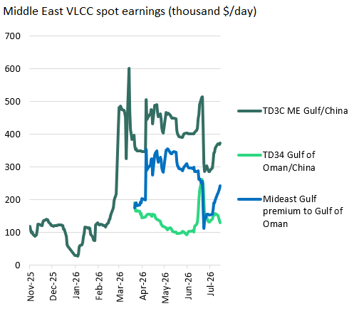
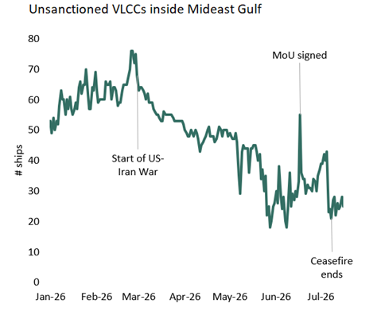
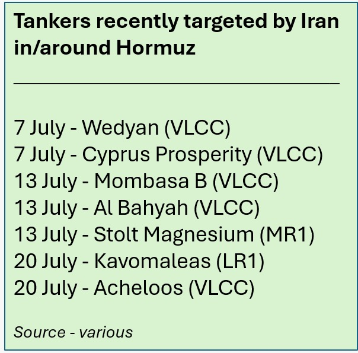
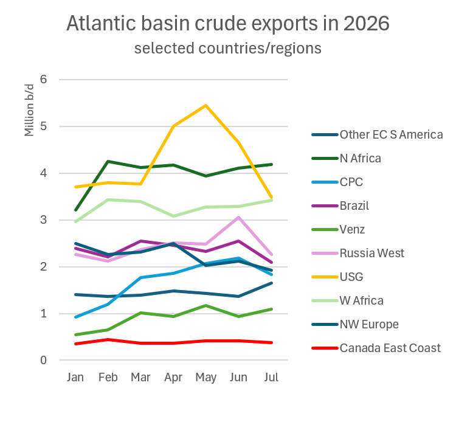

Lean pickings in the West - for an armada of empty VLCCs that now fear Red Sea liftings - does not necessarily spell the end of VLCC strength.
The escalation of violence between the US and Iran now threatens even those few Middle Eastern crude barrels that have been able to bypass Hormuz.
Yesterday, Yemen’s Houthis rebels announced their intention to enforce a ‘maritime embargo’ against Saudi Arabia. With Mideast Gulf crude already off limits, VLCCs in the East are once again forced to look to the Atlantic for employment. With US SPR at a 43-year low and unable to supplement US exports to the extent seen in recent months, and CPC loadings under threat from Ukraine, they will find fewer cargoes to choose from.
An expected global decline in VLCC liftings is nominally bearish freight. Indeed, since the closure of Hormuz last week, Atlantic VLCC stems are being overwhelmed with interest from ships open anywhere from the Middle East to Singapore. The US Gulf to China rate has fallen from about $114k/day mid-month to $105k/day yesterday. The heightened risk of Mideast Gulf loadings has meant VLCC earnings from Mideast Gulf to China have increased by almost $85k/day to $379k/day since July 6 to reach a premium of almost $255k/day to loadings in the Gulf of Oman.

Source: Baltic Exchange / Braemar
However, the key question for the future direction of Atlantic VLCC rates is how badly eastern buyers are going to need crude. This will determine how much they will pay to book the next ship that can carry it. Unless the chaos in the Middle East can be resolved quickly, we are likely to see a re-emergence of our ‘urgency premium’ for freight.
Renewed threat to Mideast VLCC demand
To recap on recent events: Trump declared the US-Iran ceasefire “over” on July 8, following Iran’s attacks on commercial tankers that were using the US-backed Southern route close to the Omani coast to exit the Mideast Gulf. A day earlier, the US had revoked sanction waivers that allowed Iran to export its oil, and launched attacks on Iran’s military and maritime infrastructure that the US claimed was being used to launch attacks on ships. The US reinstated its blockade of Iranian oil exports on July 14.
Since the ceasefire ‘officially’ ended, around 30 tanker transits via Hormuz were reported (week ending July 19), down from over 90 a week earlier. Of these 30 tankers, around half were Iran-linked dark fleet. Only 5 were compliant VLCCs exiting the Mideast Gulf, down from 30 in the week after the MoU was signed.

Source: Vortexa
The shuttle trade to exit the Mideast Gulf was explicitly targeted by Iran. We believe three of the VLCCs hit in the past two weeks have been involved in shuttling oil out of the Mideast Gulf to Fujairah/Gulf of Oman.

To make matters worse, late last week the Houthis fired missiles at Saudi Arabia in response to Saudi attacks on an airport in Yemen. Yesterday, the Houthi’s announced a “maritime embargo” on Saudi Arabia in the Red Sea. This embargo raises serious questions about the viability of eastbound routes from Saudi Arabia’s Yanbu port – the outlet for its East/West pipeline. Saudi crude liftings from Yanbu have averaged 4m b/d since the US-Iran conflict started, up from 1.3m b/d in the two months before the war. In q2 2026, 80% of this Yanbu volume headed East. One charterer was today asking for a 54 day (one way) option for Red Sea load via Suez canal and Cape of Good Hope to S Korea - an extra $1.63 in bunkers alone, basis today’s prices. Ship tracking tools already show one VLCC controlled by COSCO leaving Yanbu yesterday and heading east but now signalling Suez Canal. A dirty-trading LR2 controlled by Dynacom was on an eastbound trip this morning from Yanbu but has also now apparently changed course and is heading for the Suez Canal.
The initial closure of Hormuz in March left over 60 compliant VLCCs trapped inside the Mid East Gulf. This time round, only 25 compliant VLCCs have found themselves stuck inside by the closure (possibly a few more if vessels have recently chosen to go blind on AIS).
The additional tonnage will now be competing for Atlantic cargoes.
Atlantic basin - not what it was
Atlantic basin crude exports in the initial months of Hormuz closure were supplemented by the release of US SPR. US Gulf exports jumped from around 3.77m b/d in March to just over 5.4m b/d in May. US crude exports so far this month have returned to pre conflict levels at about 3.48m b/d. The rate of drawdown of US SPR has averaged about 650k b/d so far in July, down from 1.13m b/d in June. The US SPR is now at its lowest level since the early 1980s. A return to May export levels is unlikely.

Source: Vortexa
Elsewhere in the Atlantic, Kazakh exports rose throughout the initial days of the Hormuz crisis, but thus far in July have returned to pre-conflict levels. Thanks to the heightened risk of Ukrainian missile strikes in the Black Sea, we expect this volume to fall further. As of today, CPC liftings are effectively off limits to tankers. Displaced Suezmaxes in or near the Black Sea will be competing for Atlantic basin cargoes with both Aframaxes and VLCCs to make up for this loss.
Russia’s western crude outlets were very active last month thanks to an inability to refine much of its crude locally, but here too exports have since dropped to pre-conflict levels.
Only Venezuela has been able to sustain the strong export levels it achieved in March.
More from less
So we can expect, initially at least, to see Atlantic tonnage lists grow as cargoes materialise slower than open ships. This will loosen supply/demand balances. But the disruption in the Middle East will soon translate to nervousness among Asia buyers. With fewer crude reserves of their own to draw down compared to the initial Hormuz closure in March, competition for Atlantic crude cargoes could intensify quickly. If recent history is a guide, this could result in charterers fixing further forward. As they do, tonnage lists that once seemed full could shrink surprisingly quickly. Rates are already rising on the riskier routes within range of Iranian or Houthi missiles, with exception of Fujairah/Gulf of Oman loadings that most VLCC owners in the region still seem willing to entertain. They could soon strengthen for non-premium routes as well.